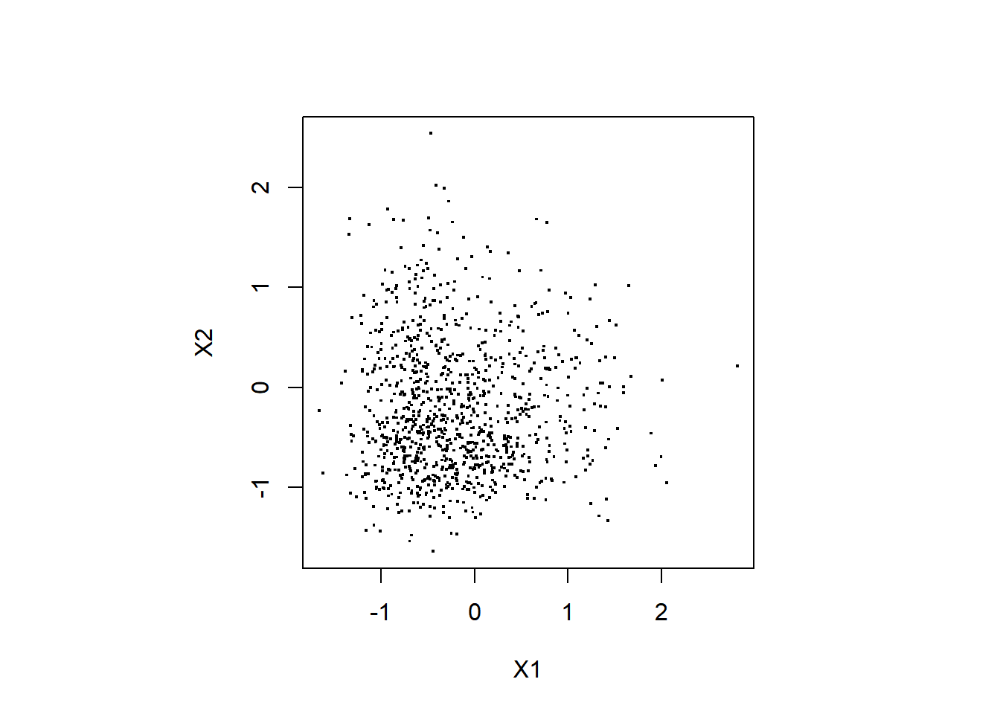
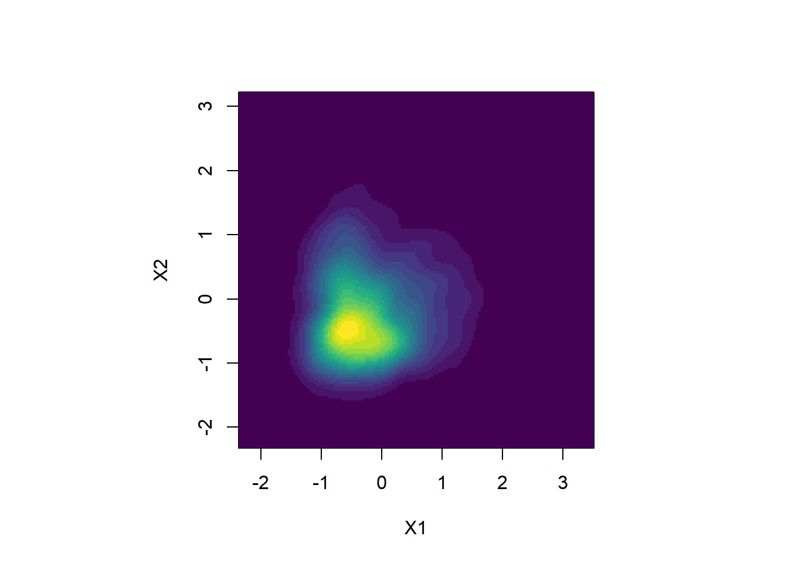
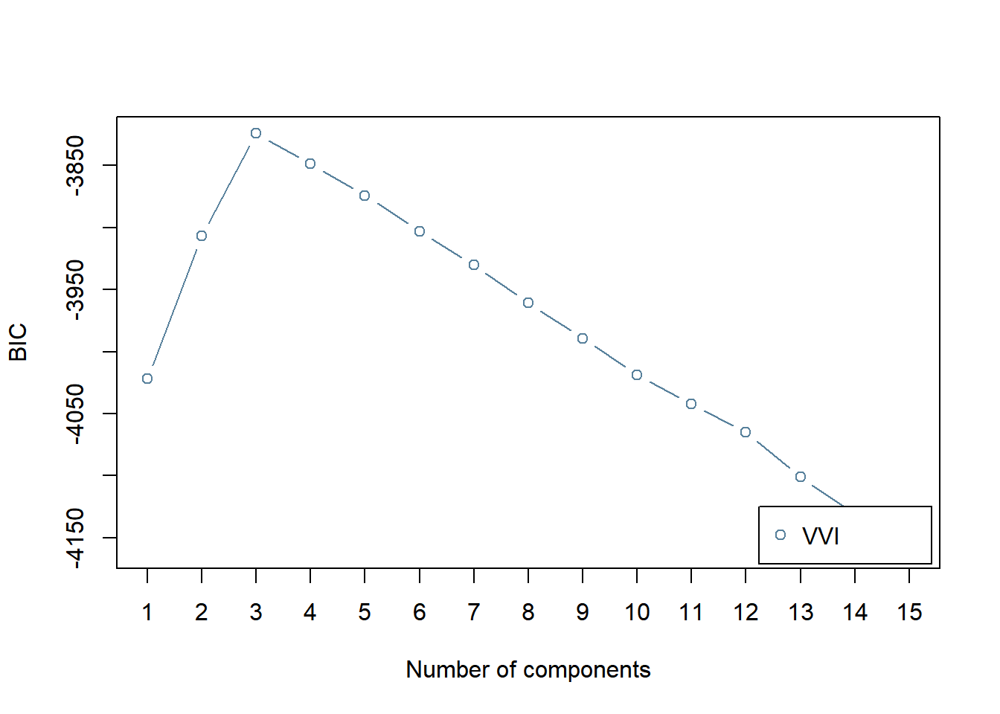

混合正規分布モデル 歪みのある分布へのフィット
GMMは，データに明確なクラスター構造がない場合でも， 複数の正規分布を重ね合わせることで基本的なパラメトリックな分布では表現できない 複雑な分布も表現できるという性質があります。 逆に，分布が正規分布ではないと，明確なクラスター構造のない分布の場合も 無理やり複数の正規分布を重ね合わせて表現できてしまうため，一つ一つの コンポーネントの解釈をする際は注意が必要です (Bauer & Curran, 2004) 。 ここでは，歪みのある分布へGMMをフィットすると 複数のコンポーネントが使われるということを確認します。 また，その性質がサンプルサイズにどのように依存するか調べてみます。
準備
本ページで使用するパッケージがインストールされていない場合は，以下の コマンドをコンソールに入力してインスト―ルしてください。
install.packages("mclust")
install.packages("mvtnorm")
install.packages("sn") # skew-normal distribution distributionを扱うためのパッケージ
install.packages("tidyverse") 以下で必要なパッケージを読み込みます。
library(mclust)
library(mvtnorm)
library(sn)
library(tidyverse) # ggplot用データの生成
デモに使うデータを生成します。 ここではデータは2次元のデータであり，それぞれ独立に 同一のskew normal distributionから生成します。
set.seed(1)
n.sample <- 1000
X1 <- rsn(n = n.sample, dp = c(-1, 1, 4))
X2 <- rsn(n = n.sample, dp = c(-1, 1, 4))
df_data <- data.frame(cbind(X1,X2))“dp = c(-1, 1, 4)”は skew normal distributionのパラメータで，それぞれ \(\xi\) (location), \(\omega\) (scale), \(\alpha\) (shape) の値です (参考: Wikipedia)。
データをプロットする
生成したデータを以下でプロットしてみます。
par(pty = "s")
# 散布図
plot(df_data$X1, df_data$X2, pch=".",
cex = 2, xlab="X1", ylab="X2")
# カーネル密度推定
kd <- ks::kde(x = df_data)
image(kd$estimate,
x = kd$eval.points[[1]],
y = kd$eval.points[[2]],
xlab = "X1", ylab = "X2",
col = viridis::viridis(20))
MclustによるGMMのフィッティング
BICにより，コンポーネント数を選択します。
BIC <- mclustBIC(df_data,
G = 1:15, # 候補となるコンポーネント数
modelNames = "VVI"
)
plot(BIC)コンポーネント数が3のときにBICの値が最大 (MClustの仕様ではBICが大きい方が良いモデル) となり，選択されます。
BICで選択されたモデルのフィッティングの結果を見てみます。
mod1 <- Mclust(df_data, x = BIC)
par(pty = "s")
plot(mod1, what = "classification")
データ生成に使った分布はクラスター構造はない単峰の分布なのですが，歪んだ構造 (裾野が大きい値の方に伸びている) を表現するために3つの正規分布のコンポーネントが使われています。一見，3つのクラスターに分かれているように見えますが，少なくとも図の上の二つのコンポーネントに実際に密度のピークがあるわけではないので解釈には注意が必要です。緑のサンプルと赤のサンプルの境界線に何か質的な断絶があるというわけではありません。
サンプルサイズ依存性
上のような歪みのあるデータに対しGMMで選択されるコンポーネント数がサンプルサイズに どのように依存するか調べてみます。
与えられたサンプル数のデータを生成して， BICでGMMのコンポーネント数を選択するという関数を作ります。
GMM_simulation <- function(n.sample) {
X1 <- rsn(n = n.sample, dp = c(-1, 1, 4))
X2 <- rsn(n = n.sample, dp = c(-1, 1, 4))
BIC <- mclustBIC(data.frame(cbind(X1,X2)), G = 1:15,
modelNames = "VVI",verbose = FALSE)
which.max(BIC) # 最大のBIC (選択されたモデル)を与えるコンポーネント数を返す
}シミュレーションで試すサンプル数を以下のように指数関数で 作ります。(対数軸で表示したときに等間隔になるように10のべき乗スケールで作ります)
n.sample.array <- round(10^seq(1.2,4.8,by=0.2))
print(n.sample.array)## [1] 16 25 40 63 100 158 251 398 631 1000 1585
## [12] 2512 3981 6310 10000 15849 25119 39811 63096各サンプルサイズでシミュレーショし，選択されたコンポーネント数を記録します。
df_simulation <- data.frame()
for (idxn in seq_along(n.sample.array)){
cat("idxn:", idxn, " ")
# 各サンプルサイズにつき5回実行する
for (idxr in 1:5){
df_simulation <- df_simulation %>%
rbind(data.frame(
nsample = n.sample.array[idxn],
K = GMM_simulation(n.sample.array[idxn]))
)
}
}## idxn: 1 idxn: 2 idxn: 3 idxn: 4 idxn: 5 idxn: 6 idxn: 7 idxn: 8 idxn: 9 idxn: 10 idxn: 11 idxn: 12 idxn: 13 idxn: 14 idxn: 15 idxn: 16 idxn: 17 idxn: 18 idxn: 19結果をプロットします。
g <- ggplot(df_simulation, aes(x=nsample, y = K)) +
geom_line( stat = "summary", fun.y = "mean" ) +
stat_summary(fun.y = "mean", geom = "point", shape = 0, size = 4) +
geom_jitter(width = 0.02,height = 0) +
scale_x_log10() +
xlab("Number of samples") + ylab("Selected number of components")
print(g)
サンプル数が100を超えたあたりから使われるコンポーネント数が 増えていく様子がわかります。 サンプル数が増えるほど，データの分布が歪んでいたときにその影響を受けるということです。 Gerlachらは一度に15万人程度 (Johnson-300 data setの場合) の大規模なデータを使っていたため，分布の歪みにより GMMのコンポーネント数が多め (13程度) に選択されていた可能性が考えられます。
ただし，このページで作った人工データでは，Gerlachらがクラスターの有意性を判定するのに行ったカーネル密度推定を用いたヌルモデルの比較ではどのコンポーネントも“meaningful cluster”とは判定されません。 ここでのヌルモデルは，与えられたデータと周辺分布は同じだが，変数間の依存関係がない独立な分布，というものでした。 このページで作った人工データは次元ごとに独立な分布から生成していたので，ヌルモデルを作ったところで元のデータの分布と形状は大きく変わらず，コンポ―ネントの中心を見ても密度が有意に変わる領域は出てきません。
では，どういうデータであれば，クラスター構造のない単峰な分布であっても“meaningful cluster”と判定されるということがあるでしょうか。 それはGerlachらの分析仮定でも起こりうることでしょうか。 それらを議論したのがこちらのコメント論文です。 この論文では，上記のようなデータを45度回転させると，“meaningful cluster”と判定されるコンポーネントが現れる，という例を示しています。